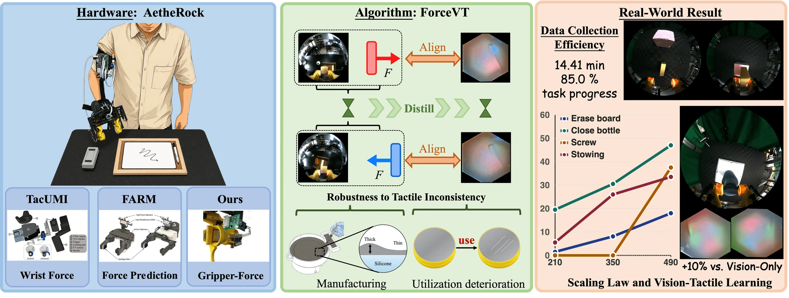
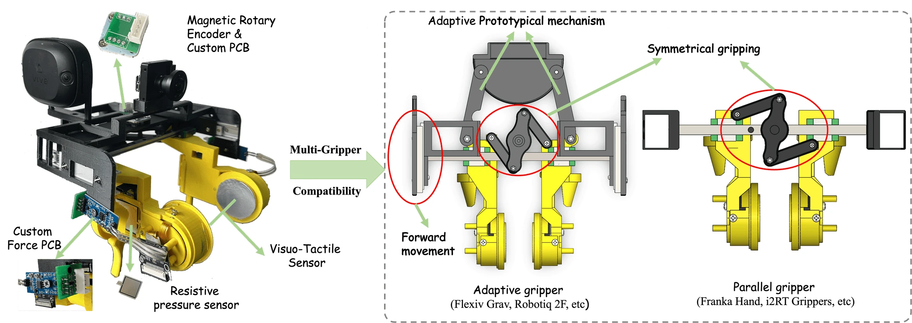
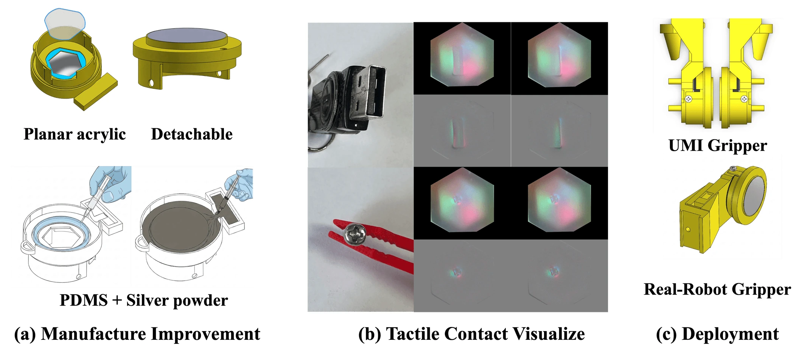
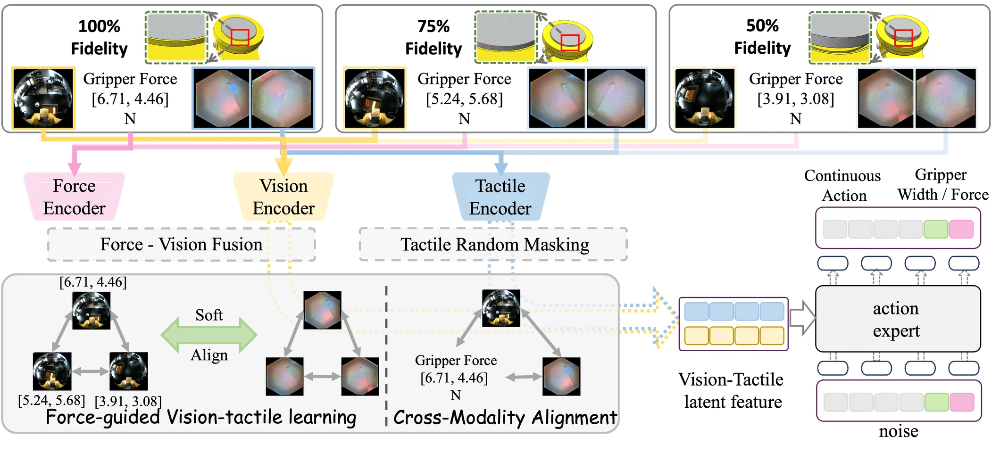
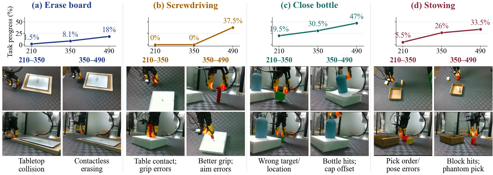
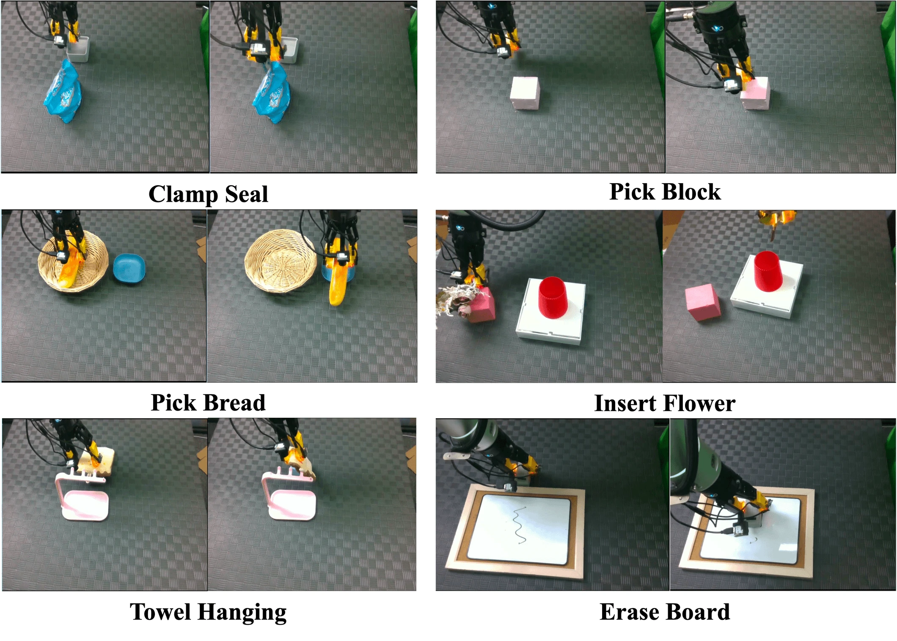
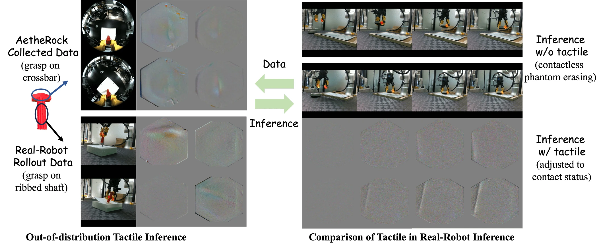

Collect multimodal demonstrations
AetheRock records gripper force, wrist-camera images, tactile observations, and motion through an arm-worn interface.
An Arm-Worn Robot Teaching System
for Force-Guided Vision-Tactile Learning

01 / OVERVIEW
A wearable collection system and a learning framework designed together for contact-rich manipulation.
AetheRock records gripper force, wrist-camera images, tactile observations, and motion through an arm-worn interface.
GelSlim-Mini combines planar acrylic, a PDMS elastomer, a silver-powder coating, and detachable components.
ForceVT uses force and vision as guidance for tactile representation learning, with masking and cross-modal alignment.
Force and tactile sensing are essential for contact-rich manipulation, but their integration into handheld or wearable devices is constrained by cost, size, and mechanical compatibility. Tactile signals also vary with manufacturing and wear. We introduce AetheRock, an arm-worn device that collects gripper-force, visual, and tactile data. It incorporates GelSlim-Mini, a modification of GelSlim 4.0 designed for low cost and easy manufacturing, and a resistive pressure sensor at the human finger contact area. We further propose ForceVT, which aligns multimodal representations and uses force and vision to guide tactile learning. Across four real-world tasks, ForceVT achieves 52.6% mean task progress, compared with 39.6% for VisTacLinear. On bottle closing, it maintains 57.0% and 53.0% task progress at 75% and 50% tactile fidelity, respectively, compared with 58.0% at full fidelity.
Mean task progress over VisTacLinear
across four contact-rich tasks
Mean drop at degraded tactile fidelities
on bottle closing
Reported GelSlim-Mini sensor cost
with detachable components
02 / HARDWARE
Finger-operated gripper control brings force, wrist vision, and tactile observations into the same demonstration.

GELSLIM-MINI
Inspired by GelSlim 4.0's optics and PCB design, GelSlim-Mini uses 2D-cut planar acrylic and a PDMS-based sensing surface with silver powder. Detachable components simplify replacement and repair.
The same sensor design can be mounted on the UMI collection gripper and the real-robot gripper.

03 / METHOD
ForceVT learns from tactile observations at different fidelities, using complementary modalities to guide the representation.

Spatial masking perturbs tactile observations from sensors with different fidelities, increasing the variation seen during training.
Fused force and vision features provide a training signal for the tactile encoder through soft alignment.
Alignment preserves relationships across modalities. Conditioned vision-tactile features then guide continuous action prediction.
04 / RESULTS
Evaluation on a Flexiv Rizon-4 with a GN-01 gripper: 20 trials per model, at five object positions. Models are trained for 50,000 steps.
ForceVT reaches 52.6% mean task progress across four tasks, a 13.0 percentage-point gain over VisTacLinear.
| Method | Erase board | Screwdriving | Close bottle | Stowing | Average |
|---|---|---|---|---|---|
| Vision-only | 18.0 | 38.0 | 47.0 | 34.0 | 34.3 |
| VisTacLinear | 31.5 | 31.0 | 50.5 | 45.5 | 39.6 |
| TacFiLM | 5.5 | 36.5 | 39.0 | 43.5 | 31.1 |
| TactileConcat | 20.0 | 9.0 | 22.5 | 30.0 | 20.4 |
| ForceVT (ours) | 49.0 | 48.5 | 58.0 | 55.0 | 52.6 |
On bottle closing, ForceVT's mean drop is 3.0 pp, compared with 22.0 pp for VisTacLinear. This measures the average drop at 75% and 50% fidelity relative to the 100% reference.
| Method | 100% fidelity | 75% fidelity | 50% fidelity | Average | Mean drop (pp) ↓ |
|---|---|---|---|---|---|
| VisTacLinear | 50.5 | 30.5 | 26.5 | 35.8 | 22.0 |
| TacFiLM | 39.0 | 18.5 | 14.5 | 24.0 | 22.5 |
| TactileConcat | 22.5 | 15.5 | 18.0 | 18.7 | 5.8 |
| ForceVT (ours) | 58.0 | 57.0 | 53.0 | 56.0 | 3.0 |
Average includes all three fidelities. Mean drop includes only the two degraded fidelities. These robustness results are specific to the evaluated bottle-closing setting.
We evaluate 210, 350, and 490 demonstrations per task. Additional data improves task progress and is associated with more appropriate approach heights, better alignment, and fewer collisions in the observed rollouts.

Policies use wrist-camera images only. The collection study uses approximately 200 demonstrations per task.
| Task | Demonstrations | Collection time (min) | Task progress (%) |
|---|---|---|---|
| Clamp seal | 229 | 28.86 | 60.0 |
| Towel hanging | 206 | 27.60 | 47.5 |
| Pick bread | 199 | 17.16 | 64.5 |
| Erase board | 215 | 26.16 | 26.0 |
| Pick block | 214 | 14.41 | 85.0 |
| Insert flower | 212 | 24.72 | 22.0 |

05 / IN MOTION
Short, looping excerpts from the original experiment video.
Bread moving, clamp seal, and towel hanging. Original success and failure examples shown side by side.
Contact and alignment during bottle closing, with tactile observations alongside the robot views.
Grasping and placement examples illustrate how contact signals complement visual observations.
Clips retain the original 3× playback speed. These qualitative excerpts illustrate behavior; the tables above report aggregate evaluation.
Tactile sensing helps distinguish physical contact from visually similar, contactless actions. It also introduces a generalization challenge: a grasp on a crossbar during data collection can produce different tactile signals from a grasp on a ribbed shaft during inference.

EXPLORE THE WORK